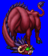
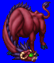
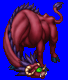
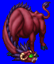

Height: 2-3 meters Weight: 900-1300 lbs.
Habitat: Plains Origin: Ethiopia
Meaning: Greek for "person who looks down"
Patterned after an animal that was thought to live in western Africa, the catoblepas has small feet and a very large head. Given this oddity, it's a wonder that it moves at all. Looking a catoblepas in the eye causes one to be killed instantly. According to another legend, it is a creature with a heavy neck that is always bowed, as if looking down at someone. In this telling of the legend, the catoblepas has a long tail which can turn its victim to stone on contact.
See also: Gorgon